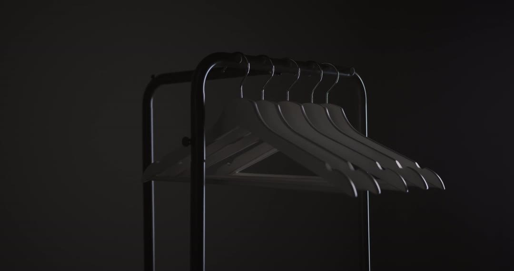
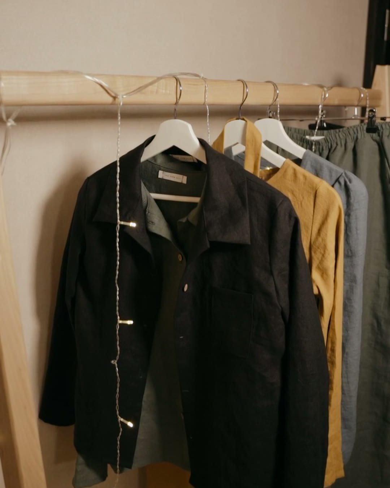
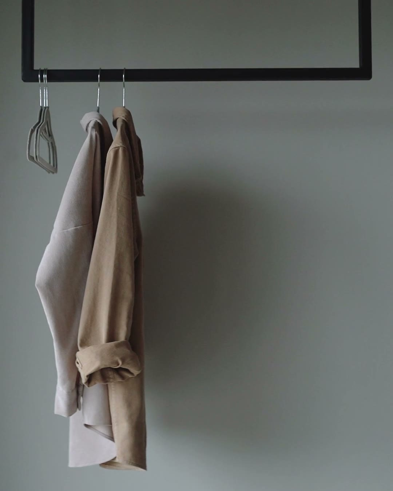
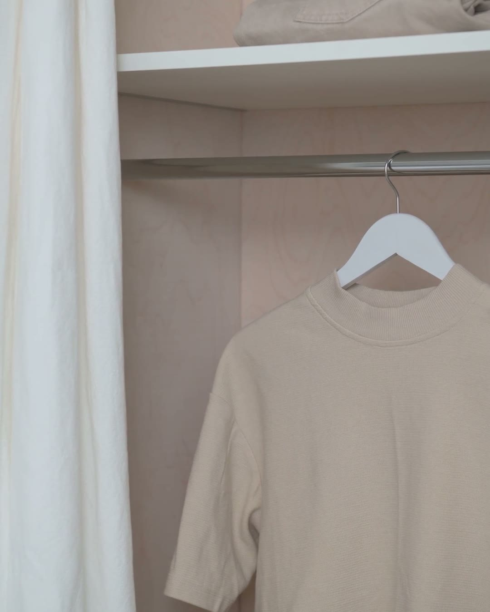
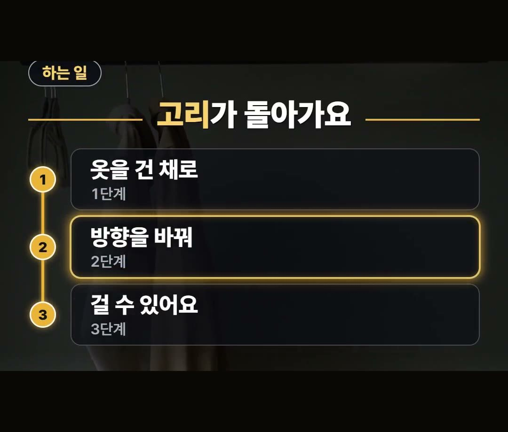
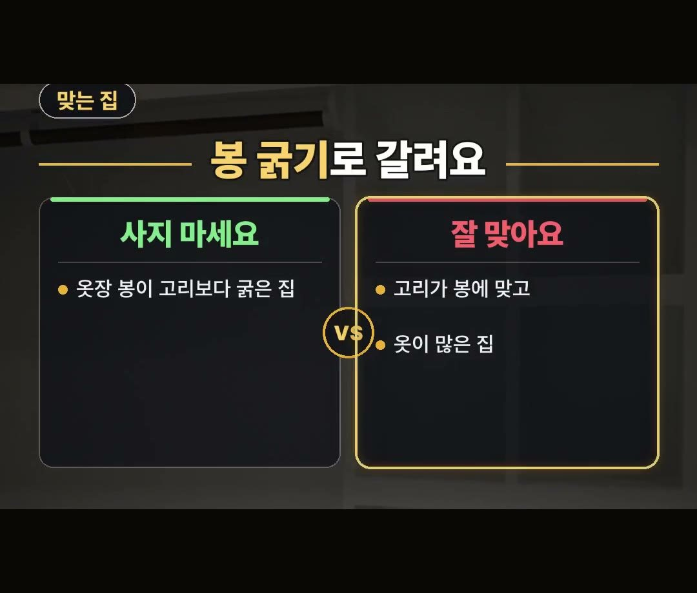

회전식 옷걸이 사기 전에 옷장 봉 굵기와 고리부터 확인해야 하는 이유
※ 이 글에는 제휴 링크가 포함되어 있으며, 링크를 통해 구매하시면 일정 수수료를 받을 수 있습니다. (가격은 같습니다)
※ 이 포스팅은 쿠팡 파트너스 활동의 일환으로, 이에 따른 일정액의 수수료를 제공받습니다.
옷장에 옷이 가득 차서 꺼내기 힘들 때 회전식 옷걸이를 고민하는 분들이 많지만, 무작정 구매했다가 옷장 봉에 걸리지 않아 다시 사야 하는 일이 발생할 수 있으니 구매 전 고리와 봉 굵기 기준을 먼저 확인하는 것이 필요합니다.
구체적인 선택 요령과 유의점은 아래에서 하나씩 정리해 드리겠습니다.

옷장 정리할 때 회전식 옷걸이를 고려하신다면 옷장 봉이 고리보다 굵은 집은 사지 마셔야 해요!
고리가 봉에 맞고 옷이 많은 집에 잘 맞으니 꼭 2가지 체크 포인트를 기억하세요 💡
옷장 정리 시 회전식 옷걸이가 하는 일

옷장 문을 열면 옷이 한쪽에 꽉 몰려 있는 경우가 있습니다.
옷을 걸 수 있는 자리는 옷장 봉 길이만큼으로 정해져 있어서, 옷이 늘어나면 정리하기도 어렵고 원하는 옷을 꺼내기도 힘들어집니다.

이때 회전식 옷걸이는 고리가 돌아가는 구조로 되어 있습니다.
옷을 걸어둔 채로 방향을 바꿔서 걸 수 있도록 도와주는 것이 회전식 옷걸이가 하는 일입니다.
회전식 옷걸이 고를 때 볼 점 첫 번째: 어디가 도는지

회전식 옷걸이를 살 때 첫 번째로 볼 점은 어디가 도는지 확인하는 것입니다.
고리 부분만 도는지, 아니면 몸통까지 접히는 형태인지 구분해 보아야 합니다.

이 부분은 상품 설명 그림에 나와 있으므로, 구매하기 전에 상품 설명 그림을 먼저 살펴보는 것이 좋습니다.
회전식 옷걸이 고를 때 볼 점 두 번째: 버티는 무게와 옷장 봉 굵기

두 번째로 볼 점은 버티는 무게 표시입니다.
두껍고 무거운 겨울 외투를 걸어둘 목적이라면 무게 표시부터 미리 확인하는 과정이 필요합니다.
아울러 고리가 집에 있는 옷장 봉 굵기에 잘 맞는지도 함께 확인해야 합니다.
회전식 옷걸이 구매를 피해야 하는 집과 잘 맞는 집

옷장 봉이 회전식 옷걸이의 고리보다 굵은 집이라면 사지 않는 것이 좋습니다.
고리가 봉에 걸리지 않아서 다시 사게 될 수 있기 때문입니다.
반대로 고리가 옷장 봉 굵기에 잘 맞고 옷이 많은 집이라면 회전식 옷걸이가 잘 맞습니다.
장바구니에 담기 전에 고리가 도는 곳과 무게 표시, 그리고 봉 굵기 2가지를 먼저 보면 다시 살 일을 줄일 수 있습니다.
정리
- 회전식 옷걸이는 고리가 돌아가 옷을 건 채 방향을 바꿔 걸 수 있습니다.
- 상품 설명 그림으로 어디가 도는지 보고, 무게 표시와 봉 굵기를 확인해야 합니다.
- 옷장 봉이 고리보다 굵은 집은 사지 말고, 고리가 맞고 옷이 많은 집에 잘 맞습니다.
최저가 링크는 아래에 모아 두었어요.
📌 2026년 10월 기준 정보예요. 가격은 시기에 따라 달라질 수 있어요.
사진·영상: Pexels (Berna, Curtis Adams, Diana ✨, Ivan S, MART PRODUCTION, Max Vakhtbovych)